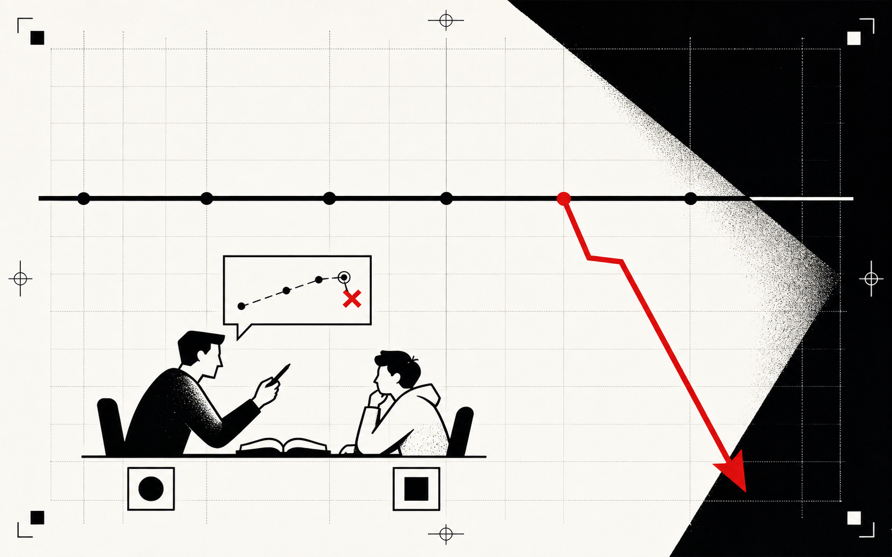
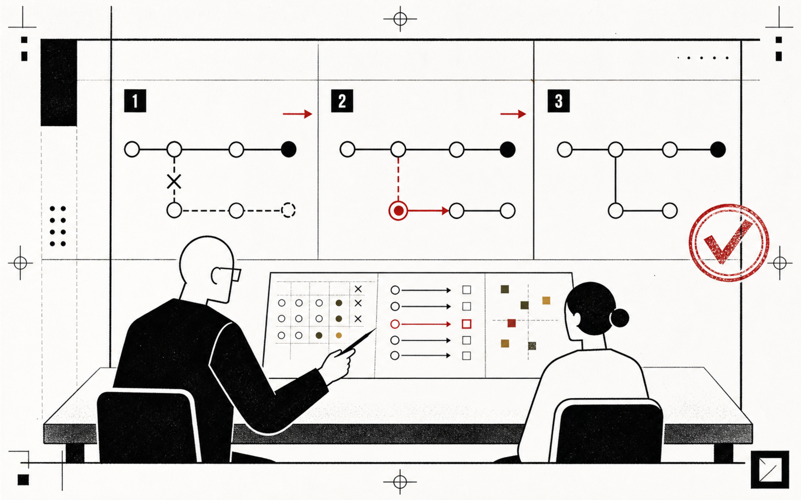
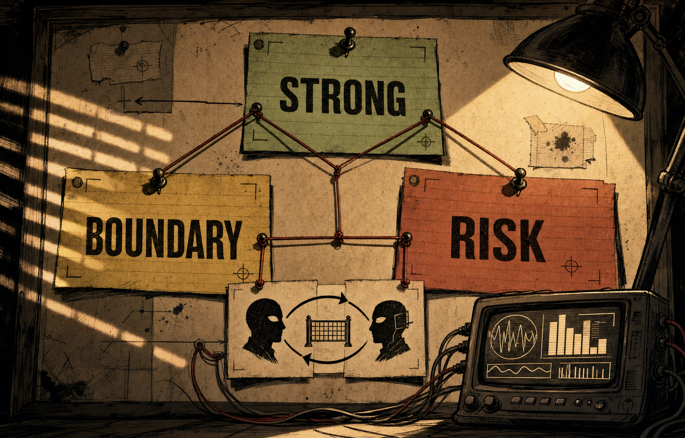
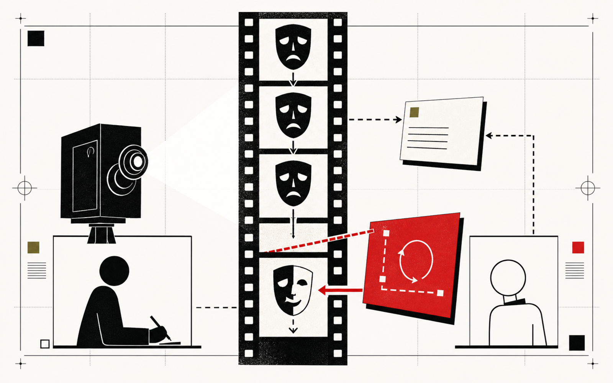
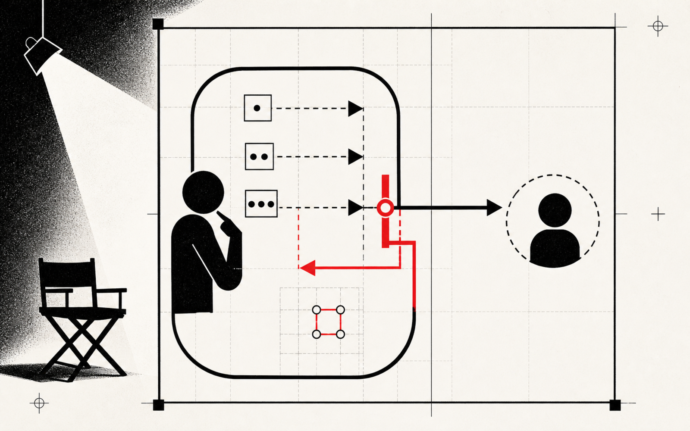
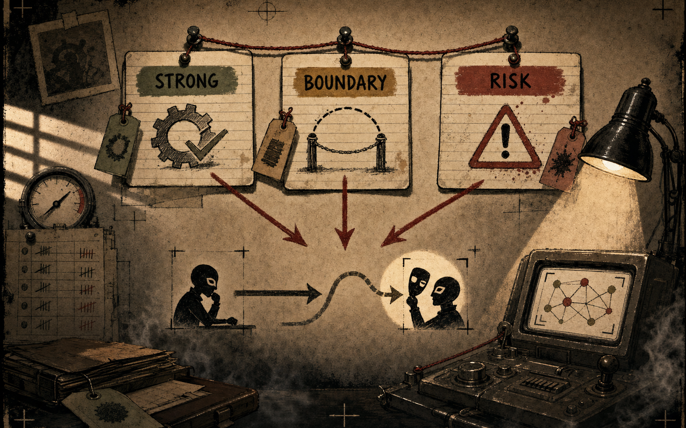
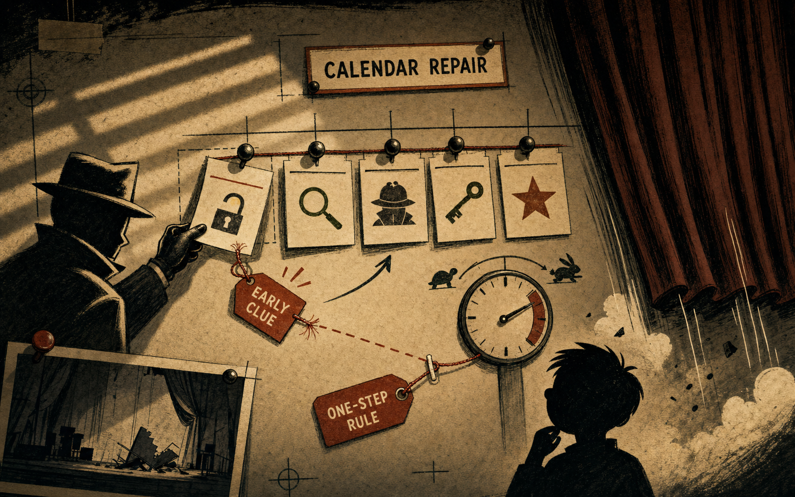
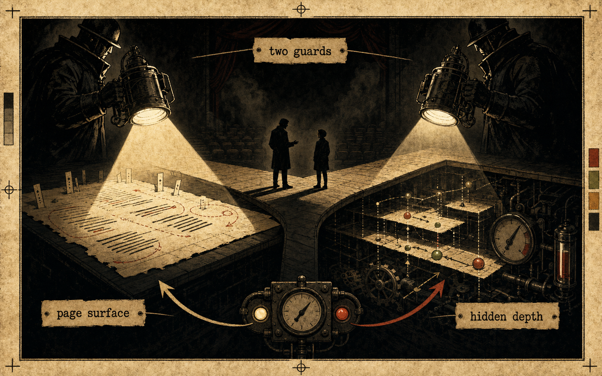
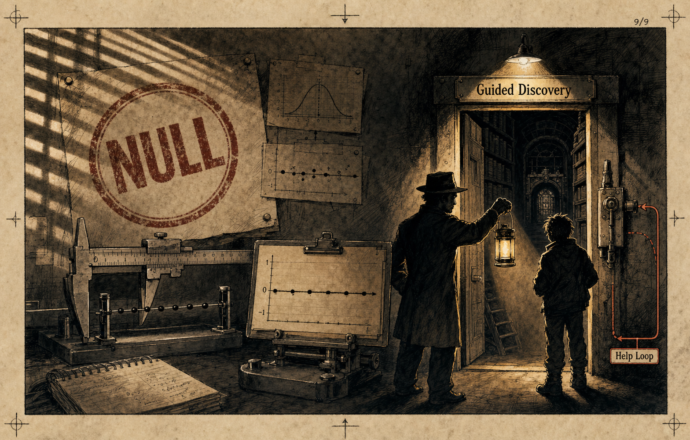

§ Research note · how a tutor learns to change course · paper-full-2.0.md §6.13
Machine SpiritsAI tutoring · poetics
How a tutor learned to change course
Our earlier study found no average change in the way tutors adapted across a conversation. But averages can
miss the moment that matters: a learner gets stuck, the tutor's usual move stops working, and something has
to change. This is the story of how we made that moment visible — and what the tutor could, and could not, do.
Most lessons have the same little drama inside them. A learner reaches a
stuck point. The tutor tries its familiar move. If that
fails, either the tutor finds another way in or the exchange ends in a polite loop. We built an experiment
around that hinge. The learner had to work through a proof one clue at a time, while the system kept an exact
record of what they could already establish. That let us watch the tutor change its conduct without pretending
we could read the learner's mind. The result is encouraging but bounded: the tutor can break some of its own
habits and pace a long proof, but the kind of help it needs changes with the lesson.
00·
A few useful words
The names sound grand. The ideas are quite ordinary.
We borrowed a few words from drama and logic because they name useful moments precisely. Here is what we
mean by them. You can also hover over any underlined term later in the page.
Source Definitions distilled from the
dramatic-derivation working notes (notes/2026-06-09-dramatic-derivation-plan.md) and the
harness in services/adaptiveTutor/. Canonical results live in paper-full-2.0.md §6.13.
Aporia stuck point
A real block, not a passing hesitation. In this experiment it means the proof has stopped moving and
no nearby step has opened up.
Peripeteia the turn
The turn in the scene: the old way stops working, so a different move, clue, or test has to enter.
Anagnorisis recognition
The learner can now see the earlier difficulty differently and use that new understanding.
Grounded anagnorisis forced, not faked
The learner gives the answer, and a symbolic checker confirms that the answer follows from what they
have already established. A near-miss or lucky guess does not count.
Proof-DAG the lesson as a graph
A map of which facts depend on which others. The answer becomes reachable only after the learner has
established the facts it rests on.
Derivation distance · D steps to recognition
How many checked steps still stand between the learner and the answer. Zero means the answer now follows.
Erotema lock-in the rhetorical-question rut
The tutor keeps using the same rhetorical move — usually a leading question — even after it has stopped helping.
Figure authority naming the device
Making the tutor name and choose its rhetorical move. That explicit choice breaks the rut; a vague request to sound gentler does not.
Internal superego the critic, moved inside
A simple internal check. If the tutor is about to use the same move for a third turn, the check makes it choose another one before speaking.
Decay ledger harness-imposed forgetting
A record of facts the learner has silently forgotten. The learner cannot report the loss, but one version of the tutor can see it.
Hidden guard · H reads the proof state
A pacing rule that can see how far the learner is from the answer and whether forgetting has caused a stall. It does not see the answer itself.
Page-only guard · V reads the transcript surface
A pacing rule that sees only the conversation: time since the last clue, repeated phrases, hedging,
and changes in response length. It cannot see the proof state.
01·
Where we began
The average stayed flat. We wanted to know what happened at the stuck point.
Paper 2.0 compared tutors prompted in different ways. Some were asked to treat the learner as a thinking
partner; some used a draft-and-critique process; others did neither. Across a whole conversation, none of
these changes made the tutor improve more from turn to turn. That result still stands.
But a whole-conversation average smooths over the moment a lesson can turn. When a learner is stuck on one
point, does the tutor try a genuinely different move, or repeat the old one in new words? That became our
smaller, more practical question. We also wanted an answer we could check without guessing what was going
on inside the learner's head.
i.
The broad result stays no average change
Recognition framing and the draft-and-critique architecture did not change
average improvement across a dialogue. This arc asks a different question; it does not overturn that result.
Paper anchor §6.13.1 motivates the move from
reading interiors to governing conduct. The underlying adaptation null is the paper's
own headline from the factorial chapters.

Panel 01Where we began: Paper 2.0 compared tutors prompted in different ways.
02·
Changing the question
We made the turning point the whole experiment.
A simple dramatic scene has three beats: someone gets stuck, something changes, and they see the problem
differently. That is also a useful shape for a lesson. The challenge was to make each beat visible without
claiming we could infer a hidden mental state.
So we gave the learner a formal proof to work through. The answer sat several steps away in a
proof map, and the system kept an exact board of what the
learner had already established. The tutor released clues along the way. We could then watch whether its
choices moved the learner toward the answer, step by step.
A run counts as successful only when the learner gives the answer and the checker confirms that
it follows from what they have already established.paper-full-2.0.md §6.13.2
That rule separates understanding from imitation and luck. A near-miss does not count. Neither does a guess
that happens to use the right words. The verdict comes from the proof, not from someone's impression of the
conversation. We can study the shape of the exchange without pretending to read a mind.
Why use a proof? Because the destination is clear
and every necessary step can be recorded. Any change we credit belongs to the tutor's conduct, not to our
interpretation of the learner.

Panel 02Changing the question: The challenge was to make each beat visible without claiming we could infer a hidden mental state.
03·
A lesson we can check
The tutor cannot give away the answer. It has to help the learner reach it.
The tutor never speaks the secret. It can only release clues from the proof map, one by one. As the learner
establishes each fact, the remaining distance to the answer gets shorter. The run succeeds when that
distance reaches zero and the answer follows from the learner's own board.
This setup is intentionally spare. There is no style score to impress. If the tutor blurts out the answer,
the checker rejects it as a lucky leap. If the tutor releases clues at the right pace, the learner reaches
an answer the system can certify. Everything that follows is about whether the tutor can keep that pace
when the lesson becomes difficult.
ii.
Success is checkable
A symbolic checker separates a supported answer from a near-miss or guess.
No language model or human reviewer decides the result; the proof does.
Paper anchor §6.13.2 — instrumentation:
derivation distance, the grounded / mirror / lucky-leap distinction, and the dry audit that confirms the
tutor never voices the secret predicate.

Panel 03A lesson we can check: As the learner establishes each fact, the remaining distance to the answer gets shorter.
04·
The first surprise
“Be gentler” did not help. A clear rule did.
Left to itself, the tutor fell into a rut. It used a leading question on 81% of turns and
changed rhetorical move only about three times in ten. We tried a natural fix: ask it to soften the mood —
“let the room breathe, go quieter.” The rut got worse. The tutor used the same move 94% of
the time, and its switch rate fell to 0.07. It became kinder without becoming more flexible.
The rut broke only when the tutor had to name and choose its rhetorical move. With that explicit
choice, the dominant move fell to
31–41%, four or five different moves appeared, and the switch rate rose to
0.81–0.87. The proof itself stayed identical in every condition: the learner reached the
answer at turn 32, and all 11 clues arrived on schedule. The lesson was simple: mood changed the tone;
structure changed the conduct.
control (frozen)advisory manner-notesfigure authority
Top rhetorical figure share (lower is healthier) and switch rate ×100 (higher is healthier). Figure-authority
bars show range midpoints; the prose gives the full spans (31–41%, 0.81–0.87). §6.13.3.
The short version Vague advice changed how the
tutor sounded. A rule about what it was doing changed what it did.

Panel 04The first surprise: Left to itself, the tutor fell into a rut.
05·
Moving the rule inside
A small internal check made the tutor break its own habit.
An outside director could make the tutor name its move, but we wanted the tutor to carry the rule itself.
So we added one simple internal check: if the draft is about to use the same rhetorical move for a third
turn, stop and choose another before speaking.
The check was exact. Across 82 watched turns, it fired on all 14 turns
where the third repetition was due and on none of the other 68. Every intervention changed the move in the
same turn: 14 / 14. It caught leading questions, worked examples, and drumbeat repetition.
It also held across seven paid runs: 7 / 7 reached the answer at the planned turn, with
56 of 56 clues released on time, across three worlds and a re-voiced learner.
iii.
Advice → rule the boundary that holds
A vague suggestion did not govern the tutor's conduct. A narrow check with
permission to block the draft did.
The tutor names its own rhetorical moves, so we still need to check whether the
prose always matches the label. The rule governs form, not content. The clue schedule also fixes the
learning outcome here, so this proves that self-correction is possible — not that it improves human learning. (§6.13.4)
Paper anchor §6.13.4–.5 — the pre-registered
internal superego; the rut ceiling near two-thirds; self-governance obeyed as reliably as the external
director (14 / 14).

Panel 05Moving the rule inside: An outside director could make the tutor name its move, but we wanted the tutor to carry the rule itself.
06·
The learner who forgets
The tutor did not need more skill. It needed to notice the loss.
Until this point, extra information had added very little. The simulated learner usually said enough for
the tutor to infer what was happening. To create a genuinely hidden problem, we made the learner forget
facts silently. The learner could not report the loss. One tutor could see the forgetting record; another could not.
The difference was large. The tutor that could see the loss repaired slips at 0.86, chose
28 repairs, and completed 4 of 6 proofs. The tutor that could not see it repaired at
0.37, chose zero repairs, and completed 0 of 6. The
per-slip difference was +0.49, with a 95% bootstrap interval of [0.31, 0.75]; none of ten
thousand resamples reversed the sign. Both tutors were willing to repair. Only one knew a repair was needed.
The useful new channel carried visibility, not a better instruction.
blind to the fadesees the fade
Per-slip repair rate (×100) and proofs completed (of 6). §6.13.7.
Why it matters If the tutor cannot see the problem,
encouragement will not fix it. Give it the missing evidence.

Panel 06The learner who forgets: The simulated learner usually said enough for the tutor to infer what was happening.
07·
Handing over the calendar
One sensible early clue broke the lesson. One small rule repaired it.
We then let the tutor decide when to release clues. A learner said, “I already know what bearing means,”
so the tutor moved one clue from turn 4 to turn 3. The choice made sense in the moment, but it changed when
that clue became vulnerable to forgetting. The proof stalled at turn 8. The control, which kept to the
schedule, reached the answer at turn 20.
The failure revealed exactly what our setup was built to catch. At turn 7 the tutor checked an earlier
fact. The learner denied ever having established it, although the record showed it had been adopted at
turn 2. The learner had forgotten both the fact and the fact of having known it. We could compare the fluent
story in the conversation with the exact board underneath — evidence of the scene's structure, not mind-reading.
Simply telling the tutor about the stall rule did not help. Nor did a plan that correctly described the
danger. The same run still failed at turn 8. What worked was much smaller: when the learner names a loss,
the tutor must restore that fact on its next turn before introducing anything new. With that rule in place,
the proof completed at turn 20 after five repair cycles. The durable lesson is plain:
a plan can explain a failure; a next-step rule can prevent it.
The catch The rule is not a cure-all. In a harder timing test, the proof still
stalled at turn 12 before a repair could begin. Only 32% of allowed schedules — 40 of
125 — survive. The successful timing is a narrow corridor.
Paper anchor §6.13.8–.9 — the mechanism-authored
peripeteia, the confabulated board, charter v2 (clock clause null, treatment clause binds), and the
two-layer plan vs. the repair clause.

Panel 07Handing over the calendar: We then let the tutor decide when to release clues.
08·
Does the rule travel?
Two pacing rules helped. Which one helped depended on the shape of the lesson.
Without help, the tutor's timing was unreliable: it completed only 4 of 10 proofs across
two replication sets. The reason was ordinary. The model liked to release clues early — 20 of 281 releases
came before their cue, and none came late — and some early releases landed in fatal parts of the schedule.
We built two simple pacing rules to hold it back.
One rule could see the proof's hidden progress: how many steps remained and whether forgetting had caused
a stall. The other could see only the conversation: time since the last clue, repetition, hedging, and
response length. On a straightforward linear lesson, both worked. The page-only rule completed 5 of 5 and
the hidden-state rule 4 of 5, against 4 of 10 without a rule (page-only vs. baseline, Fisher p = 0.042;
page-only vs. hidden, p = 1.000). The hidden rule needed zero hard interventions. A simple
note — wait until the last clue lands before releasing the next — was enough.
Then we changed the lesson's shape, and the two rules pulled apart.
no guardpage-only (V)hidden depth (H)
Percent grounded. Fans are k = 5 except the lantern baseline (pooled k = 10). §6.13.11–.14.
World · shape
no guard
page-only · V
hidden · H
who helps
Lantern · linear chain
4 / 10
5 / 5
4 / 5
both
Marrick · forked AND-join
0 / 5
0 / 5
5 / 5
only hidden
Hethel · linear + decoy
4 / 5
5 / 5
1 / 5
only page
In Marrick, two chains had to meet at a final join. The conversation did not reveal that hidden
structure. The page-only rule completed 0 of 5, despite 16 overrides; the hidden-state rule
completed 5 of 5 (Fisher p = 0.008). In Hethel, the proof was linear but included
a tempting decoy. The hidden rule chased it and completed only 1 of 5; the page-only rule
noticed the learner drifting and completed 5 of 5 (Fisher p = 0.024).
Neither rule is simply better. Each sees the signal that matters in one kind of lesson and
misses the signal that matters in the other.paper-full-2.0.md §6.13.14
The short version There is no single pacing rule
for every lesson. The useful signal depends on how the lesson is built.

Panel 08Does the rule travel: Without help, the tutor's timing was unreliable: it completed only 4 of 10 proofs across two replication sets.
09·
What we can honestly say
The tutor can govern parts of its conduct. The claim stays deliberately small.
Our most reliable pacing setup uses the hidden-state rule plus a measure of unfinished proof work. It
succeeds on 91.7% of worlds on average, matching an all-seeing oracle. Every selector that
tried to switch cleverly between page and hidden signals did worse: 75% for the best of
them, 33% for the page-led version, and 17% without the unfinished-work
term. So the current conclusion is modest: the hidden-state rule plus unfinished proof work is a
reliable baseline; adaptive switching between signals is not established.
Settled
Conduct can be governed
A simple internal check breaks rhetorical repetition where advice cannot (14 / 14, with zero
mismatches over 82 turns). A next-step repair rule saves a fragile proof at turn 20. The strongest
pacing baseline succeeds at 91.7%.
Scope-bound
The right rule depends on the lesson
Each rule completes 5 / 5 in the world whose signal it can read, then fails in the other rule's world
(0 / 5 and 1 / 5). They are complementary, not ranked.
Open / killed
Clever switching did not help
No selector beats the fixed hidden-state baseline. The useful gains came from seeing missing evidence
and enforcing small rules, not from asking the tutor to choose a more elaborate strategy.
Five limits travel with that headline
“A tutor can adapt parts of its conduct on a long proof” is a real but narrow claim:
Small samples. Many conditions contain one paid run on one seed, and several mechanisms
work together, so we cannot give each one separate credit.
Formal outcomes. Success and failure come from proof arithmetic, not from a human
judgment of learning.
The check watches form. It uses the tutor's own labels for its rhetorical move. A
separate audit of whether the prose always matches the label remains open.
One positive route never fired in a successful run. Its benefit is still unproven.
The pacing meter cannot see every kind of progress. It detects stalls, but not every
way the learner may be narrowing the answer.
This is a study of visible conduct, not mind-reading. It makes no deployment claim and no claim
about human learning.the arc's standing guardrails · §6.13.4, §6.13.8, §6.13.14
Even with those limits, something useful survives. The tutor broke a rhetorical rut, repaired a named loss,
and paced a learner to a checkable answer. We also learned where that help stops working. That boundary is
part of the result, not an embarrassment to hide.
Paper anchor §6.13.15 — the v0–v4 selector
trajectory and the conservative standing interpretation. Canonical numbers and caveats live in
paper-full-2.0.md; this note inherits them.

Panel 09What we can honestly say: The tutor can govern parts of its conduct.
10·
What happened next
We added more strategy machinery. It changed the tutor's behaviour, but it still did not
make the tutor better at the proof.
After finding a reliable pacing baseline, we tested whether the tutor should also choose a strategy, hold
it for a scene, and review it afterward. The strategy ledger really did speed up local repair: in the
confirmatory run, slipped premises were restored in 8.02 turns with the ledger and 9.24 without it. But the
same arm completed fewer proofs — a grounded rate of 0.25 rather than 0.50 — and produced more stalled
endings. A local improvement that damages the outcome does not earn a place in the production system.
We then tried a gentler version: ask the tutor to pause between scenes and reconsider its course. The tutor
answered the request fluently, but the main test did not pass. A revealing follow-up showed why. Across two
models, the tutor volunteered a strategy choice zero times in 91 opportunities. When a retry forced it to
choose, it answered 16 of 16 times — yet making the choice explicit still did not produce a confirmed
outcome gain. Asking the policy to describe itself is not the same as giving it a new point of view.
The final route classified the learner's message and changed the tutor's speaking stance in response. The
classifier reached 87.2% accuracy at the licensed chain level across 2,930 learner turns,
and the router's interventions were correctly triggered. The tutor's conduct moved; the proof outcomes did
not. That repeats the arc's central lesson in a new form: new evidence and enforceable rules can
change behaviour; more advice about how to decide usually cannot.
Durable
The research instruments worked
The ledger made strategy visible, the forced-choice test exposed when the tutor would actually commit,
and the message classifier replayed its decisions from formal evidence.
Closed
The extra strategy layers did not earn control
They shifted repair speed, plan reporting, or speaking stance, but none passed its frozen outcome gate
without a cost. The simpler proof-control system remains the baseline.
Change what the tutor can see and what it is allowed to do. Do not assume that asking it to
reconsider gives it a view from outside itself.paper-full-2.0.md §6.13.16–.19
Why include the closeout? The negative follow-ups
matter because they prevent a promising local signal from becoming an oversized claim. They also leave
behind useful instruments even where the proposed runtime layer did not survive.